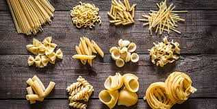

The Recreationalist
Seeing some of the world's most famous sights certainly tops everyone's list when traveling in Italy.
But taking part in an activity or trying something new, especially something you can share with locals, adds a special dimension to a trip.
Places to visit
Vatican City
Vatican City is actually its own state within Italy, although you can only visit this landlocked area by first travelling to Rome.
If you are in the region then you should definitely consider swinging by one of the most important religious spots in the world, which is home to powerhouses such as the Piazza San Pietro and St Peter’s Basilica.
Trevi Fountain
No trip to Rome is complete without a trip to the Trevi Fountain, and in fact if you want to return here then it is considered an absolute necessity.
Local legend has it that anyone who tosses a coin into the fountain will get good luck that will mean that they will one day return to this great city.
The fountain is carved in the Baroque style and is made of glittering marble which is lit up at night to spectacular effect.
Frasassi Cave
The Frasassi Cave is located deep in the grounds of Ancona and descending into this wonderful feat of nature can feel like you are travelling to the center of the earth.
The journey takes 75 minutes and you can expect to find some of the most beautiful karst formations anywhere in the world here.
The inside of the grotto is covered in walkways and lighted areas that let you take in the amazing geology within such as eerie stalactites and stalagmites.
Things to do

Glide Through The Grand Canal in a Gondola
The Grand Canal in Venice is one of the most famous waterways in the world and there are a variety of ways that you can enjoy it.
One of these is to take a water bus known as a vaporetto along the various parts of the canal where you can marvel at the little bridges and traditional Venetian homes that back onto the water.
Another more romantic way to travel around the canal is to take an iconic gondola ride where you can imagine that you are back in the Venice of a different time.
Make Perfect Pasta in Florence
Anyone who loves to cook will relish the chance to learn how to make Italy's most famous culinary specialty: perfect pasta. Pasta and other cooking classes are offered throughout Italy, but Florence has a number of them, often combined with a tour of food markets and shops in the company of a food-wise local.
Tour Tuscan Hill Towns by Bicycle or Car
Tuscany's hilly countryside is best enjoyed at leisure, stopping to explore tiny settlements between the tourist attractions of the larger medieval towns that crown the hilltops. While a driving tour can cover more of these towns, a bicycle gets you closer to the land and gives you time to notice more details.
Where to stay
The Gritti Palace Venice, Veneto, Italy
This 15th-century palazzo occupies one of the loveliest spots on the Grand Canal, looking across to the magnificent Salute church, and has equally sumptuous interiors to match, with priceless antiques and frescoes, and a small but exquisite spa.
Grand Hotel Tremezzo Lake Como, Italy
Elegant, stylish and fashionable, the Grand Hotel Tremezzo stands majestically on the western shore, offering sophisticated interiors combining strong colours and classical details. Sun yourself by the floating pool, sip cocktails on the terrace or zip along the lake in one of the hotel’s chic water limousines.
Belmond Hotel Splendido Portofino, Liguria, Italy
Housed an in a 16th-century monastery building with fabulous views over the bay of Portofino, the luxurious Splendido is one of Italy’s Grande Dame hotels. With its excellent facilities, delicious food and exceptional service, you may never want to leave, but there’s lots to do in the area to tempt all the same.
Booking.com loves Italy! How about you?
More choices, more destinations.
What to eat
Spaghetti ai frutti di mare
“Spaghetti ai frutti di mare” is mainly a tradition from the central and southern provinces. You can find it with different types of seafood, mussels, clams, razor clams and baby clams, some adding also prawns. The flavor is enhanced by the addition of fresh cherry tomatoes, fresh parsley and extra-virgin olive oil. If you are wondering what are the best foods to eat in Italy, a meal of spaghetti di mare will satisfy your curiosity (and appetite).
Tiramisu
Tiramisu is an elegant and rich layered Italian dessert made with delicate ladyfinger cookies, espresso, mascarpone cheese, eggs, sugar, Marsala wine, rum and cocoa powder. Through the grouping of these diverse ingredients, an intense yet refined dish emerges. The taste of this little sweety dessert will be unforgettable.
Gelato
Gelato or ice cream is one of the most known inventions of Italy,which is generally lower in fat than other styles of frozen desserts. Gelato typically contains 70% less air and more flavouring than other kinds of frozen desserts, giving it a density and richness that distinguishes it from other ice creams.
The traditional flavours of gelato consist of vanilla, chocolate, hazelnut, pistachio, cream (also known as custard) and stracciatella (fior di latte gelato with chocolate chunks).